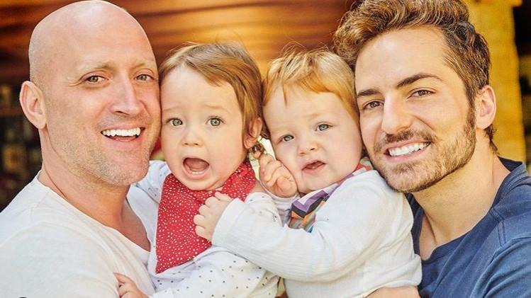

Biografia de Paulo Gustavo
Paulo Gustavo Amaral Monteiro de Barros (1978-2021) foi um ator, humorista e apresentador brasileiro.
Nascido em 30 de outubro de 1978 em Niterói (RJ), ganhou enorme reconhecimento com sua personagem Dona Hermínia, uma mãe e dona de casa, protagonista dos três filmes da série Minha Mãe é Uma Peça.
O primeiro longa-metragem da trilogia alcançou um recorde de público, sendo o filme mais assistido em 2013, ano se seu lançamento.
Assumidamente homossexual, Paulo tratou assuntos relevantes como a valorização da população LGBTQIA+ de maneira leve e bem humorada, levando o debate para milhares de pessoas.
Aos 42 anos, em 4 de maio de 2021 Paulo Gustavo faleceu, vítima de COVID-19.
Formação e Carreira
Em 2005 Paulo Gustavo se formou profissionalmente como ator na Casa das Artes de Laranjeiras (CAL). Teve como colegas atores como Fábio Porchat e Marcus Majella, dentre outros.
O primeiro momento de destaque na carreira de Paulo Gustavo foi quando participou da peça Surto, em 2004, quando ainda era estudante. Foi nessa peça que nasceu a personagem Dona Hermínia.
No ano seguinte passa a integrar a peça Infraturas, e concilia participações em programas de TV.
Em 2006 surge o monólogo Minha Mãe é Uma Peça, no qual desenvolve ainda mais sua personagem mais famosa. Por conta do sucesso, a peça se transformou em filme em 2013 e ganhou mais dois longas-metragens em 2016 e 2019.
Foi por conta da interpretação de Dona Hermínia que Paulo Gustavo recebeu o Prêmio Shell de melhor ator.
Além disso, participou do espetáculo Hiperativo, em 2010 e foi apresentador do programa de TV 220 Volts, em 2011. Em 2013 esteve no sitcom Vai que Cola; em 2014 estreou o reality show Paulo Gustavo na Estrada e em 2017 passa a integrar o elenco de A Vila, todos programas do canal Multishow.
Um ano depois trabalha no filme Minha Vida em Marte, ao lado de Mônica Martelli,seu último trabalho foi o especial de fim de ano 220 Volts, exibido em dezembro de 2020.
Vida pessoal
Muito ligado à família, Paulo Gustavo nasceu em Niterói, onde viveu a maior parte de sua vida. Se assumiu gay ainda na adolescência e em 2015 se casou com o dermatologista Thales Bretas, indo morar no Rio de Janeiro.
Em 2019 nasceram Gael e Romeu, filhos do casal, gerados por barrigas de aluguel.

Paulo Gustavo e a sua família.
Paulo Gustavo era dono de uma fortuna e realizava doações com frequência para ajudar os necessitados. Segundo Padre Júlio Lancelotti, que atua diretamente em ações de caridade, Paulo doou 1,5 milhão para a construção de um hospital para tratar doentes de câncer.
Adoecimento e morte
Atingido pela COVID-19, Paulo Gustavo teve complicações e em 13 de março de 2021 precisou ser internado. Cerca de um mês depois seu estado de saúde se agravou.
Recebeu tratamento médico sofisticado com oxigenação por membrana extracorporal (ECMO), que auxilia na respiração, quando o pulmão já está muito comprometido.
Apesar de uma aparente melhora, no dia 4 de maio teve uma embolia pulmonar, vindo a falecer às 21h12 e se juntando às milhares de vítimas da COVID-19 no país.